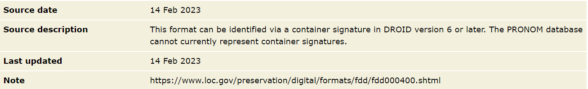

Container File Identification
Last updated on 2026-08-18 | Edit this page
Estimated time: 0 minutes
Overview
Questions
- What does a container signature file look like?
- What is the relationhip between contain signature XML and PRONOM?
- What are the important aspects of the container signature structure?
Objectives
- Learn about the fundamental structure of a container signature file
- Understand the three (?) distinct sections of the signature file
NB. the xml below needs to be prettified…
Exploring container signatures
Task: The Container Signature File
Open the latest container signature file.
In your web browser, or text editor of choice:
Directly:
https://cdn.nationalarchives.gov.uk/documents/container-signature-20240715.xml
Or via PRONOM > DROID Signature Files > 15 July 2024 (at the bottom of the page):
How DROID Identifies Container-based File Formats
- Initial identification of certain container formats acts as a Trigger for DROID to check for container identification matches
- DROID then checks the internal structure of these container format instances, seeking matching Paths to required subfiles (files or directories within the container)
- If a matching path is found, DROID then checks the InternalSignatures of the subfile(s), seeking matching identification Sequences
- All elements of a container signature must be present for it to return a hit
- A format (PUID) can have multiple container signatures, in which case matching against any will return a hit
- If no matching trigger identification is found, or no matching paths are found, or where declared no matching sequences are found, binary identification continues as normal
Container signatures in the PRONOM database
- PRONOM won’t show container signatures within the database. If a format is in the database usually there is a note on the page mentioning that it has a container signature attached as below.
- Container signatures are not entered into our database in the same way as binary signatures and can only be seen via the downloaded xml files.
- Container signatures are written manually in xml before being published. You can therefore see different stylistic decisions that may have been made within the xml.

Container Signature File Structure
Consists of three sections:
ContainerSignatures - the actual signature data that is used to identify files
FileFormatMappings - the relationship (or key) between formats in PRONOM proper and Container Signatures
TriggerPuids - the formats in PRONOM that, where initially identified, will prompt container signature processing and detection
Container Triggers
The identification of certain container formats acts as a trigger for DROID to check for container identification matches. These triggers are:
- fmt/111: OLE2 Compound Document Format
- fmt/189: Microsoft Office Open XML 2007 Onwards
- x-fmt/263: Zip Format
> NB: fmt/189 is a specific type of zip
If your file identifies as any of these then it may well be a candidate for a container signature!
Triggers are found in the ‘TriggerPuids’ section at the bottom of the Container Signature File:
File Format Mappings
The relationship (or key) between formats in PRONOM proper and Container Signatures, which includes SignatureID and PUID attributes.
- SignatureID maps to items in the ContainerSignatures section and is assigned manually by the PRONOM team
- PUID maps directly to a PRONOM identifier.
- Includes a comment line containing the format name and usually the type of container trigger
- A PUID can be mapped to multiple ContainerSignatures by SignatureID. In this case a match against any of the listed container signatures will return a match
Container Signature Structures - Overview
- At the top level, Container Signatures consist of an ID attribute which matches the File Format Mapping.
- The ContainerType attribute (either ZIP or OLE2) is informational and relates to the Trigger.
- The Description usually matches the format name, but may include additional information (e.g. ‘variant 2’).
- The Files element must exist and contains one or more File elements.
Container Signature Structures - Files
- File elements contain one to many Path elements
- Paths represent a filepath to a resource (directory or file) relative to the root of the container
- A Container Signature must minimally have one File & Path, but can have many
- A File can have zero-to-many BinarySignatures
- A Container Signature must match against all given Paths and BinarySignatures to return a match
Container Signature Structures - Sequences
- A Path can have zero-to-many InternalSignatures
- InternalSignatures represent a byte sequence found within a file specified by a Path
- An InternalSignature can be formed of many sub-Sequences
- As with binary signatures, InternalSignatures can be positioned relative to the BOF, EOF, or Variable within the file
- Sequences in a Container Signature can be expressed as hexadecimal, or ASCII where appropriate (usually standard western alphanumeric characters from the 7-bit ASCII range). If in doubt use hexadecimal!
- The value of InternalSignature ID is arbitrary, but in later versions we usually match them to the Container Signature ID
Container Signature Syntax
- Syntax for container signatures can differ from binary signature syntax
- The most obvious of these is the option to write in ASCII with inverted commas or in hexadecimal whereas binary signatures are only written in hexadecimal
- Binary signature syntax elements, such as wildcards and byte ranges cannot be applied in the same way - instead signatures are more similar to the post-processed versions found in the binary signature file
Container signature examples
Container Signature Example - fmt/412
XML
<ContainerSignature Id="1030" ContainerType="ZIP">
<Description>Microsoft Word OOXML</Description>
<Files>
<File>
**
<Path>[Content_Types].xml</Path>**
<BinarySignatures>
<InternalSignatureCollection>
**
<InternalSignature ID="302">**
<ByteSequence Reference="BOFoffset">
<SubSequence Position="1" SubSeqMinOffset="0" SubSeqMaxOffset="32768">
<Sequence>'ContentType="application/vnd.openxmlformats-officedocument.wordprocessingml.document.main+xml"'</Sequence>
</SubSequence>
</ByteSequence>
</InternalSignature>
</InternalSignatureCollection>
</BinarySignatures>
</File>
</Files>
</ContainerSignature>Container Signature Example - fmt/39
XML
<ContainerSignature Id="1000" ContainerType="OLE2">
<Description>Microsoft Word 6.0/95 OLE2</Description>
<Files>
<File>
<Path>WordDocument</Path>
</File>
<File>
<Path>CompObj</Path>
<BinarySignatures>
<InternalSignatureCollection>
<InternalSignature ID="306">
<ByteSequence Reference="BOFoffset">
<SubSequence Position="1" SubSeqMinOffset="40" SubSeqMaxOffset="1024">
<Sequence>10 00 00 00 'Word.Document.' ['6'-'7'] 00</Sequence>
</SubSequence>
</ByteSequence>
</InternalSignature>
</InternalSignatureCollection>
</BinarySignatures>
</File>
</Files>
</ContainerSignature>Container Signature Example - fmt/1196
Container Signature Example - fmt/1190
XML
<InternalSignature ID="28200">
<ByteSequence Reference="BOFoffset">
<SubSequence Position="0" SubSeqMinOffset="0" SubSeqMaxOffset="0">
<Sequence>3C 3F 78 6D 6C 20 76 65 72 73 69 6F 6E 3D 22 31 2E 30 22 20 3F 3E</Sequence>
</SubSequence>
</ByteSequence>
<ByteSequence Reference="BOFoffset">
<SubSequence Position="1" SubSeqMinOffset="23" SubSeqMaxOffset="50">
<Sequence>3C 73 77 63 20 78 6D 6C 6E 73 3D 22 68 74 74 70 3A 2F 2F 77 77 77 2E 61 64 6F 62 65 2E 63 6F 6D 2F 66 6C 61 73 68 2F 73 77 63 63 61 74 61 6C 6F 67 2F</Sequence>
</SubSequence>
</ByteSequence>
</InternalSignature>Container Signature Example - fmt/978
XML
<ContainerSignature Id="30020" ContainerType="OLE2">
<Description>3DS Max</Description>
<Files>
<File>
<Path>DocumentSummaryInformation</Path>
<BinarySignatures>
<InternalSignatureCollection>
<InternalSignature ID="30020">
<ByteSequence Reference="BOFoffset">
<SubSequence Position="1" SubSeqMinOffset="0" SubSeqMaxOffset="1024">
<Sequence>33 64 73 20 4D 61 78 20 56 65 72 73 69 6F 6E </Sequence>
</SubSequence>
</ByteSequence>
</InternalSignature>
</InternalSignatureCollection>
</BinarySignatures>
</File>
</Files>
</ContainerSignature>- Container signature XML is currently separate from the PRONOM database
- Container signatures are separated into three structural components
- Triggers define a mapping between container type and container signature
- A container signature is a combination of metadata, file path, and binary signature pattern
- Binary signatures are optional and container signatures can be created even if we only have a consistent file path to work on